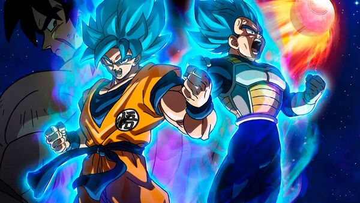

Dragon Ball
Dragon Ball (1986-1989, 153 capítulos): El principio de todo, más de aventuras que de acción, con un Goku más centrado en la leyenda del Rey Mono y la lucha contra maestros de las artes marciales que contra extraterrestres capaces de destruir planetas. Como serie es probalmente la mejor.
Dragon Ball Z (1989-1996, 287* capítulos) / Dragon Ball Z Kai (2009-2015, 159 capítulos): Ya veas la primera versión o el homenaje de aniversario, remasterizado y sin relleno, aquí está el anime de acción por excelencia. Z es épica y llena de batallas legendarias: La primera lucha de Goku contra Vegeta, ese primer Super Saiyan contra Freezer, Gohan contra Célula, la imaginativa saga Buu... Una leyenda.
Dragon Ball Super (2015-2018, 131 capítulos): Discutida y tardía serie reciente del anime que aprovechó siete años huecos de la serie original para crear una nueva ficción. Aunque al principio flojea y la animación ha recortado su calidad, te recompensa con un último arco, un torneo entre universos, que llega a rozar los mejores momentos de la serie.
Super Dragon Ball Heroes (2018-actualidad): No es canónica y roza el fan service, solo para completistas.
Dragon Ball Z (los últimos 4 episodios, 288, 289, 290 y 291): El final más "auténtico" y canónico de las aventuras de Goku para su creador, Akira Toriyama.
Personajes:
Goku: El protagonista principal de la serie, un guerrero Saiyan que se convierte en el héroe de la Tierra.
Vegeta: El príncipe Saiyan y rival de Goku, que se convierte en un aliado y amigo cercano.
Piccolo: Un Namekiano que comienza como el enemigo de Goku, pero eventualmente se convierte en un aliado y amigo.
Bulma: Una genio de la tecnología y amiga cercana de Goku, quien ayuda a la pandilla en sus aventuras.
Krilin: El mejor amigo de Goku y un guerrero humano que lucha junto a él en muchas batallas.
Trunks: El hijo de Vegeta y Bulma, que viaja en el tiempo para ayudar a Goku y sus amigos a luchar contra enemigos poderosos.
Gohan: El hijo de Goku, quien hereda su gran poder y se convierte en un guerrero poderoso.
Androides 17 y 18: Creados por el Dr. Gero, estos androides poderosos son enemigos temibles de Goku y sus amigos.
Freezer: Un tirano alienígena que busca dominar la galaxia y es uno de los enemigos más peligrosos de Goku y sus amigos.
Cell: Una creación bioingeniería de alta tecnología que se convierte en uno de los villanos más poderosos en la serie.
